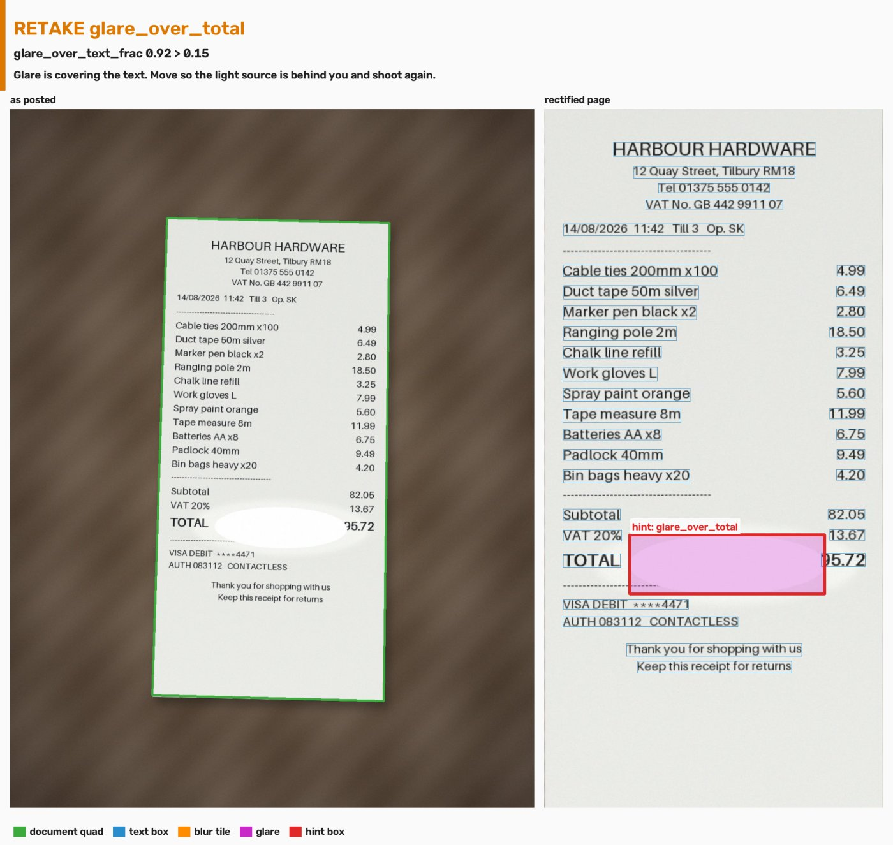
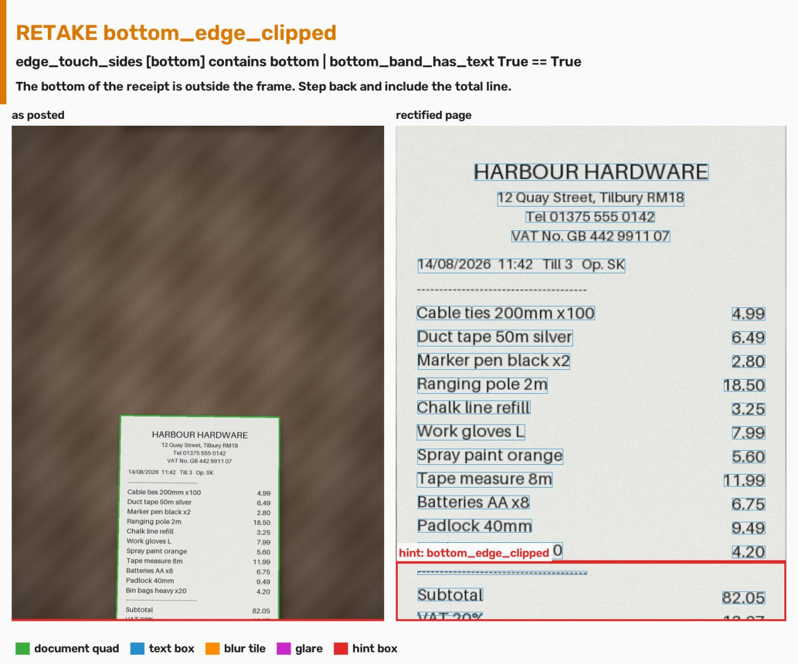
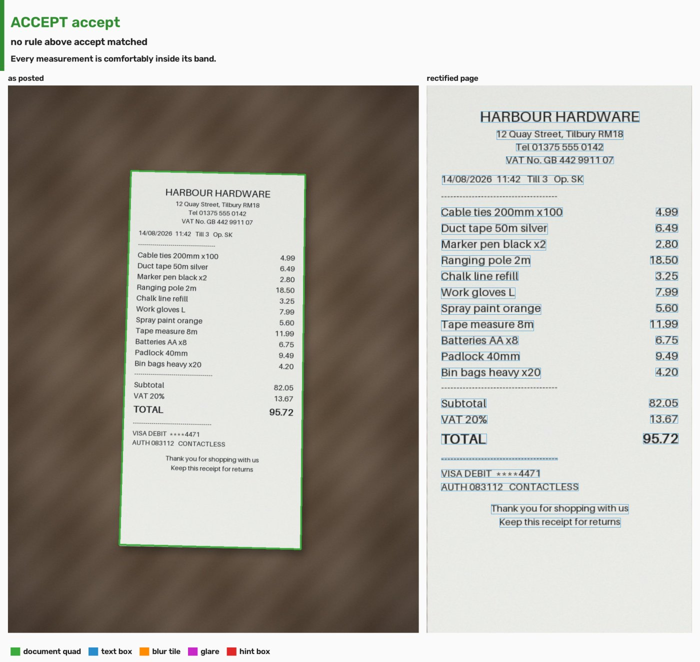
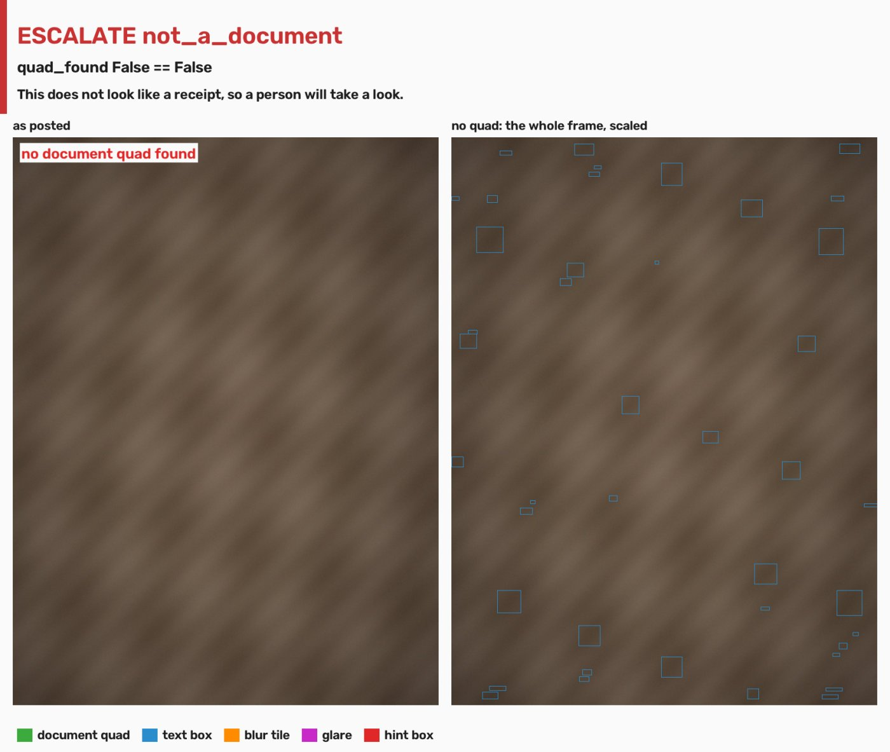
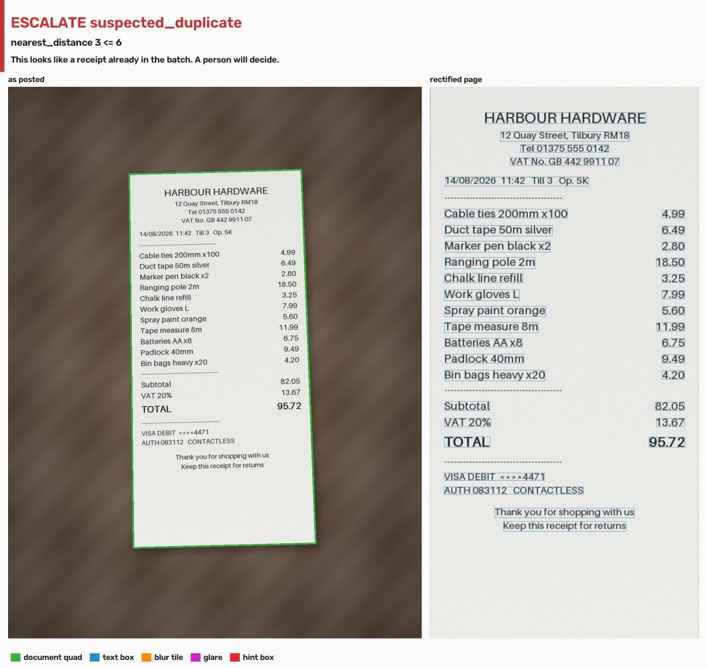

glare_text.jpg is measured. 92% of the glare falls on the text lines, around the total — over the 0.15 threshold — so the cascade says retake, naming the one metric that failed and a hint box over where it failed.
RETAKE glare_over_total
“Glare is covering the text. Move so the light source is behind you and shoot again.”
| metric | value | test | threshold |
|---|---|---|---|
| glare_over_text_frac | 0.9211 | > | 0.15 |
Hint box (page pixels, x y w h): [201, 1006, 462, 141]
capture c_001, attempt 1, state after the agent: awaiting_retake
| seq | actor | action | inputs | outputs | caused_by |
|---|---|---|---|---|---|
| 1 | agent | inspect_capture | {"image_shape": [1600, 1200]} | {"phash": "174e787070788680", "nearest_distance": 64} | |
| 2 | agent | decide_capture | {"glare_over_text_frac": 0.9211} | {"outcome": "retake", "rule_id": "glare_over_total", "reason_code": "glare_over_total"} | 1 |
| 3 | agent | request_recapture | {"failing_metric": "glare_over_text_frac"} | {"hint_box": [201, 1006, 462, 141], "successor_id": "c_002"} | 2 |

crop_bottom.jpg arrives in the slot the retake request opened. compare_captures reports the glare fixed, but the new framing cut the bottom of the receipt with text at the cut, so a different rule fires on a different metric. Nothing scheduled this second instruction; the second image's measurements chose it.
RETAKE bottom_edge_clipped
“The bottom of the receipt is outside the frame. Step back and include the total line.”
| metric | value | test | threshold |
|---|---|---|---|
| edge_touch_sides | ["bottom"] | contains | "bottom" |
| bottom_band_has_text | true | == | true |
Hint box (page pixels, x y w h): [0, 895, 800, 122]
capture c_002, attempt 2, state after the agent: awaiting_retake
| seq | actor | action | inputs | outputs | caused_by |
|---|---|---|---|---|---|
| 1 | agent | inspect_capture | {"image_shape": [1600, 1200]} | {"phash": "174e787070788680", "nearest_distance": 64} | |
| 2 | agent | decide_capture | {"glare_over_text_frac": 0.9211} | {"outcome": "retake", "rule_id": "glare_over_total", "reason_code": "glare_over_total"} | 1 |
| 3 | agent | request_recapture | {"failing_metric": "glare_over_text_frac"} | {"hint_box": [201, 1006, 462, 141], "successor_id": "c_002"} | 2 |
| 4 | agent | compare_captures | {"metric": "glare_over_text_frac", "before": 0.9211} | {"after": 0.0, "status": "fixed"} | 3 |
| 5 | agent | inspect_capture | {"image_shape": [1600, 1200]} | {"phash": "330e7c3870707058", "nearest_distance": 64} | 4 |
| 6 | agent | decide_capture | {"edge_touch_sides": ["bottom"], "bottom_band_has_text": true} | {"outcome": "retake", "rule_id": "bottom_edge_clipped", "reason_code": "bottom_edge_clipped"} | 5 |
| 7 | agent | request_recapture | {"failing_metric": "edge_touch_sides"} | {"hint_box": [0, 895, 800, 122], "successor_id": "c_003"} | 6 |

clean_a.jpg arrives as attempt 3. Every metric is comfortably inside its band, so the agent accepts it. Accepting is the only thing the agent may finish on its own.
ACCEPT accept
“Every measurement is comfortably inside its band.”
No rule above accept matched.
capture c_003, attempt 3, state after the agent: accepted
| seq | actor | action | inputs | outputs | caused_by |
|---|---|---|---|---|---|
| 1 | agent | inspect_capture | {"image_shape": [1600, 1200]} | {"phash": "174e787070788680", "nearest_distance": 64} | |
| 2 | agent | decide_capture | {"glare_over_text_frac": 0.9211} | {"outcome": "retake", "rule_id": "glare_over_total", "reason_code": "glare_over_total"} | 1 |
| 3 | agent | request_recapture | {"failing_metric": "glare_over_text_frac"} | {"hint_box": [201, 1006, 462, 141], "successor_id": "c_002"} | 2 |
| 4 | agent | compare_captures | {"metric": "glare_over_text_frac", "before": 0.9211} | {"after": 0.0, "status": "fixed"} | 3 |
| 5 | agent | inspect_capture | {"image_shape": [1600, 1200]} | {"phash": "330e7c3870707058", "nearest_distance": 64} | 4 |
| 6 | agent | decide_capture | {"edge_touch_sides": ["bottom"], "bottom_band_has_text": true} | {"outcome": "retake", "rule_id": "bottom_edge_clipped", "reason_code": "bottom_edge_clipped"} | 5 |
| 7 | agent | request_recapture | {"failing_metric": "edge_touch_sides"} | {"hint_box": [0, 895, 800, 122], "successor_id": "c_003"} | 6 |
| 8 | agent | compare_captures | {"metric": "edge_touch_sides", "before": ["bottom"]} | {"after": [], "status": "fixed"} | 7 |
| 9 | agent | inspect_capture | {"image_shape": [1600, 1200]} | {"phash": "174e7870785d8680", "nearest_distance": 64} | 8 |
| 10 | agent | decide_capture | {"rule_id": "accept"} | {"outcome": "accept", "rule_id": "accept", "reason_code": "clean"} | 9 |

not_doc.jpg has no document quad, so the agent does not guess: it escalates. While it waits, every agent tool refuses it — the calls below were made against it and these are their real refusals. Then a reviewer rejects it, and the trace records the reviewer as the actor.
ESCALATE not_a_document
“This does not look like a receipt, so a person will take a look.”
| metric | value | test | threshold |
|---|---|---|---|
| quad_found | false | == | false |
capture c_001, attempt 1, state after the agent: escalated
StateError: inspect_capture refused: c_001 is 'escalated'; agent tools act only on received or measured capturesStateError: decide_capture refused: c_001 is 'escalated'; agent tools act only on received or measured capturesStateError: request_recapture refused: c_001 is 'escalated'; agent tools act only on received or measured capturesStateError: compare_captures refused: c_001 is 'escalated'; agent tools act only on received or measured capturesStateError: escalate refused: c_001 is 'escalated'; agent tools act only on received or measured capturesPermissionError: 'approve' is human-only; actor was 'agent'| seq | actor | action | inputs | outputs | caused_by |
|---|---|---|---|---|---|
| 1 | agent | inspect_capture | {"image_shape": [1600, 1200]} | {"phash": "eae8a4f4d4d0f8ea", "nearest_distance": 64} | |
| 2 | agent | decide_capture | {"quad_found": false} | {"outcome": "escalate", "rule_id": "not_a_document", "reason_code": "not_a_document"} | 1 |
| 3 | agent | escalate | {"reason": "not_a_document"} | {"review_item": "opened"} | 2 |
| 4 | reviewer | reject | {"note": "checked by hand, not a receipt"} | {"state": "rejected"} | 3 |

dup_a.jpg is receipt A re-shot at a different pose. Its perceptual hash lands 3 bits from the accepted clean_a.jpg (the threshold is 6), so the agent escalates it; it can never auto-reject or auto-accept a duplicate. Even the reviewer's approve is refused until they say whether it is a duplicate. Here they confirm it is, and it is rejected.
ESCALATE suspected_duplicate
“This looks like a receipt already in the batch. A person will decide.”
| metric | value | test | threshold |
|---|---|---|---|
| nearest_distance | 3 | <= | 6 |
capture c_003, attempt 1, state after the agent: escalated
approve before resolving: RuntimeError: c_003 is a suspected duplicate; resolve_duplicate before approving| seq | actor | action | inputs | outputs | caused_by |
|---|---|---|---|---|---|
| 1 | agent | inspect_capture | {"image_shape": [1600, 1200]} | {"phash": "174c7070785d0680", "nearest_distance": 3} | |
| 2 | agent | decide_capture | {"nearest_distance": 3} | {"outcome": "escalate", "rule_id": "suspected_duplicate", "reason_code": "suspected_duplicate"} | 1 |
| 3 | agent | escalate | {"reason": "suspected_duplicate"} | {"review_item": "opened"} | 2 |
| 4 | reviewer | resolve_duplicate | {"is_duplicate": true, "note": "same receipt, re-shot"} | {"duplicate": "confirmed"} | 3 |